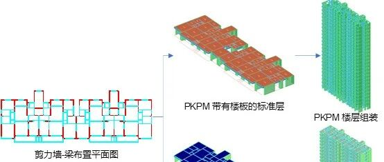

AIstructure-Copilot-v0.1.7功能更新：实现多标准层的PKPM/YJK自动建模
0
内容提要
此前版本可以完成剪力墙和梁构件的PKPM/YJK建模（AIstructure-Copilot-v0.1.5：自动生成YJK/PKPM建模文件），新版本增加楼板建模功能，同时可进行多标准层参数设置以及楼层组装，实现基于剪力墙-梁构件布置图生成全楼的剪力墙结构模型。
欢迎大家试用！

1
AIstructure-Copilot更新
1.1 多标准层参数设置
在原有参数设置的面板中，增加了多标准层参数的设置选项，可以分别对不同标准层设置剪力墙厚、剪力墙混凝土等级、梁高、梁混凝土等级、板厚、板混凝土等级参数。其中墙厚默认值为“-1”，即采用程序推荐墙厚参数。若进行修改，则采用用户自定义墙厚。
更多操作请详见使用说明手册。需注意，目前不同标准层仍采用相同的剪力墙和梁布置。

标准层参数设置
1.2 楼层组装
楼层组装功能则是在标准层参数的基础上进行定义，目前楼层组装功能参考PKPM/YJK的楼层组装方式，可设置自然层层高以及对应的标准层层号。

楼层组装参数设置
1.3 PKPM/YJK标准层楼板自动生成
完成剪力墙-梁构件的布置设计后，将从CAD导出剪力墙-梁布置设计和构件截面尺寸，随后将基于剪力墙和梁的布置设计，布置楼板并写入PKPM/YJK的SQLite数据库文件中。可以看到目前的每个标准层都有对应的楼板布置，以及对应的默认楼面荷载参数。

自动生成楼板及默认荷载的标准层
1.4 PKPM/YJK整楼模型
可以看到，采用了AIstructure-Copilot中楼层组装参数设置后，生成的PKPM/YJK模型便可以自动生成对应的楼层组装参数，并且形成正确的整楼模型。

PKPM/YJK中自动生成的楼层组装情况
1.5 剪力墙智能设计模块其他重要改进
解除建筑平面尺寸小于51m×25m的限制，当平面尺寸大于51m×25m时，基于GNN的剪力墙设计功能可以正常执行，而基于GAN和扩散模型的智能设计功能无法使用，我们将继续改进。

建筑设计平面尺寸为66m，超过原本的尺寸限制

GNN1成功生成剪力墙布置

GNN2成功生成剪力墙布置


GAN和diffusion设计失败，CAD图纸中同样会给出设计失败的提示
2
典型案例

PKPM
YJK

案例1

PKPM
YJK

案例2

PKPM
YJK

案例3

PKPM
YJK

案例4

PKPM
YJK

案例5
3
结语
我们进一步完善了从建筑CAD设计图纸到结构计算模型的自动化过程，主要增加了设置多个标准层参数并进行楼层组装的功能、自动生成楼板功能，从而进一步提升智能设计的便捷程度。
彩蛋！欢迎大家试用建筑前处理中的建筑空间分割功能，有望提升后期梁布置的合理性。

后续，我们还将不断完善相关产品功能。欢迎大家持续关注我们的工作，多多支持！
温馨提示：为更好使用AI设计工具，请仔细阅读使用说明书。
联系方式
QQ群，AI-structure-交流群：741840451
ai-structure.com联系方式
QQ群，AI-structure-交流群：741840451
AIstructure-Copilot实现“三驾马车”驱动：Diffusion Model智能设计上线！(20231103)
AIstructure-Copilot-v0.1.2更新：精细化考虑抗震设计条件影响的全新GNN版本，请您来试试(20230928)
ai-structure.com：剪力墙结构材料用量AI预测模块上线测试(20230731)
AIstructure-Copilot：嵌入CAD平台的结构智能设计助手(20230711)
建筑结构生成式智能设计在日内瓦国际发明展上获“评审团特别嘉许金奖”(20230519)
ai-structure.com：土木工程自然语言规则AI解译模块上线测试(20230513)
AI剪力墙设计问卷调查结果(20230508)
相关论文
Liao WJ, Lu XZ, Huang YL, Zheng Z, Lin YQ, Automated structural design of shear wall residential buildings using generative adversarial networks, Automation in Construction, 2021, 132, 103931. DOI: 10.1016/j.autcon.2021.103931.
Lu XZ, Liao WJ, Zhang Y, Huang YL, Intelligent structural design of shear wall residence using physics-enhanced generative adversarial networks, Earthquake Engineering & Structural Dynamics, 2022, 51(7): 1657-1676. DOI: 10.1002/eqe.3632.
Zhao PJ, Liao WJ, Xue HJ, Lu XZ, Intelligent design method for beam and slab of shear wall structure based on deep learning, Journal of Building Engineering, 2022, 57: 104838. DOI: 10.1016/j.jobe.2022.104838.
Liao WJ, Huang YL, Zheng Z, Lu XZ, Intelligent generative structural design method for shear-wall building based on “fused-text-image-to-image” generative adversarial networks, Expert Systems with Applications, 2022, 118530, DOI: 10.1016/j.eswa.2022.118530.
Fei YF, Liao WJ, Zhang S, Yin PF, Han B, Zhao PJ, Chen XY, Lu XZ, Integrated schematic design method for shear wall structures: a practical application of generative adversarial networks, Buildings, 2022, 12(9): 1295. DOI: 10.3390/buildings1209129.
Fei YF, Liao WJ, Huang YL, Lu XZ, Knowledge-enhanced generative adversarial networks for schematic design of framed tube structures, Automation in Construction, 2022, 144: 104619. DOI: 10.1016/j.autcon.2022.104619.
Zhao PJ, Liao WJ, Huang YL, Lu XZ, Intelligent design of shear wall layout based on attention-enhanced generative adversarial network, Engineering Structures, 2023, 274, 115170. DOI: 10.1016/j.engstruct.2022.115170.
Zhao PJ, Liao WJ, Huang YL, Lu XZ, Intelligent beam layout design for frame structure based on graph neural networks, Journal of Building Engineering, 2023, 63, Part A: 105499. DOI: 10.1016/j.jobe.2022.105499.
Zhao PJ, Liao WJ, Huang YL, Lu XZ, Intelligent design of shear wall layout based on graph neural networks, Advanced Engineering Informatics, 2023, 55, 101886, DOI: 10.1016/j.aei.2023.101886
Liao WJ, Wang XY, Fei YF, Huang YL, Xie LL, Lu XZ*, Base-isolation design of shear wall structures using physics-rule-co-guided self-supervised generative adversarial networks, Earthquake Engineering & Structural Dynamics, 2023, DOI:10.1002/eqe.3862.
Feng YT, Fei YF, Lin YQ, Liao WJ, Lu XZ, Intelligent generative design for shear wall cross-sectional size using rule-Embedded generative adversarial network, Journal of Structural Engineering-ASCE, 2023, 149(11). 04023161. DOI:10.1061/JSENDH.STENG-12206.
Fei YF, Liao WJ, Lu XZ*, Guan H*, Knowledge-enhanced graph neural networks for construction material quantity estimation of reinforced concrete buildings, Computer-Aided Civil and Infrastructure Engineering, 2023, DOI: 10.1111/mice.13094.
Zhao PJ, Fei YF, Huang YL, Feng YT, Liao WJ, Lu XZ*, Design-condition-informed shear wall layout design based on graph neural networks, Advanced Engineering Informatics, 2023, 58: 102190. DOI: 10.1016/j.aei.2023.102190.
Fei YF, Liao WJ, Lu XZ*, Taciroglu E, Guan H, Semi-supervised learning method incorporating structural optimization for shear-wall structure design using small and long-tailed datasets, Journal of Building Engineering, 2023, DOI：10.1016/j.jobe.2023.107873
Liao WJ, Lu XZ*, Fei YF, Gu Y, Huang YL, Generative AI design for building structures, Automation in Construction, 2024, 157: 105187. DOI: 10.1016/j.autcon.2023.105187
Zhao PJ, Liao WJ, Huang YL, Lu XZ*, Beam layout design of shear wall structures based on graph neural networks, Automation in Construction, 2024, 158: 105223. DOI: 10.1016/j.autcon.2023.105223

学术报告视频
公众号文章
---End--